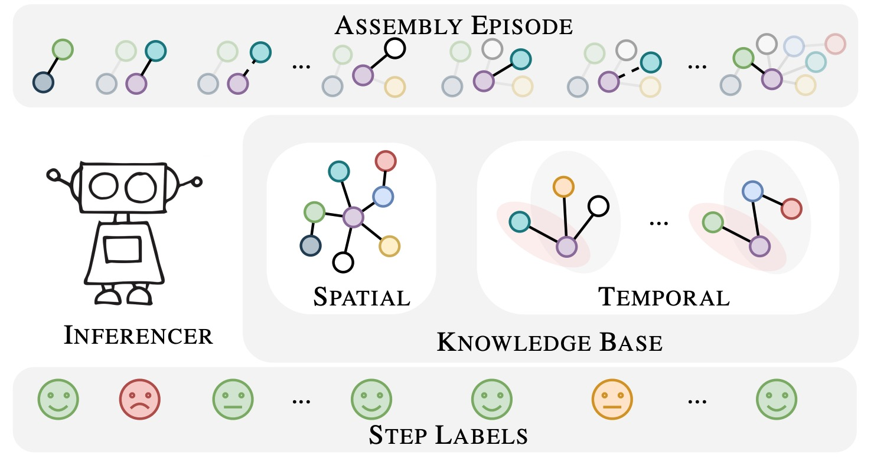

|  |
Guodong Ding1, Fadime Sener2 , Shugao Ma2 and Angela Yao1
1National University of Singapore, 2 Reality Labs, Meta
One promising use case of AI assistants is to help with complex procedures like cooking, home repair, and assembly tasks. Can we teach the assistant to interject after the user makes a mistake? This paper targets the problem of identifying ordering mistakes in assembly procedures. We propose a system that can detect ordering mistakes by utilizing a learned knowledge base. Our framework constructs a knowledge base with spatial and temporal beliefs based on observed mistakes. Spatial beliefs depict the topological relationship of the assembling components, while temporal beliefs aggregate prerequisite actions as ordering constraints. With an episodic memory design, our algorithm can dynamically update and construct the belief sets as more actions are observed, all in an online fashion. We demonstrate experimentally that our inferred spatial and temporal beliefs are capable of identifying incorrect orderings in real-world action sequences. To construct the spatial beliefs, we collect a new set of coarse-level action annotations for Assembly101 based on the positioning of the toy parts. Finally, we demonstrate the superior performance of our belief inference algorithm in detecting ordering mistakes on the Assembly101 dataset.
Files: [pdf]
Annotations: [annots]
Citation:
@article{ding2023every,
title={Ordering Mistake Detection in Assembly Tasks},
author={Ding, Guodong and Sener, Fadime and Ma, Shugao and Yao, Angela},
journal={arXiv preprint arXiv:2307.16453},
year={2023}
}